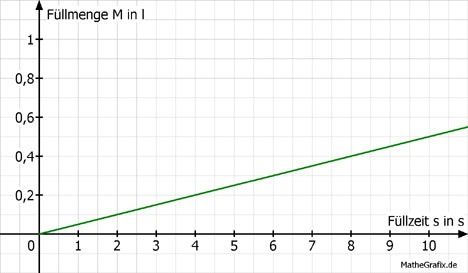

Lineare Funktionen Aufgabe 21 Drei gleich große Gefäße werden mit Wasser gefüllt. Zu Beginn ist Gefäß A leer, im Gefäß B stehen 0,1 l und im Gefäß C stehen 0,5 l Wasser. Die Füllgeschwindigkeit beträgt 50 ml/s. Ermitteln Sie die Abhängigkeit der Füllmenge M in l von der Füllzeit s für die 3 Gefäße. Ergänzen Sie die Wertetabellen. 50 ml/s = 0,05 l/s Gefäß A: M = 0,05 * s s 0 10 M 0 0,5 